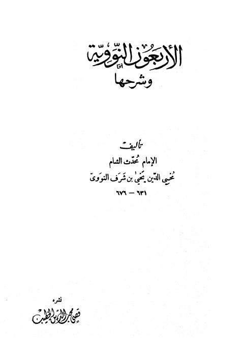
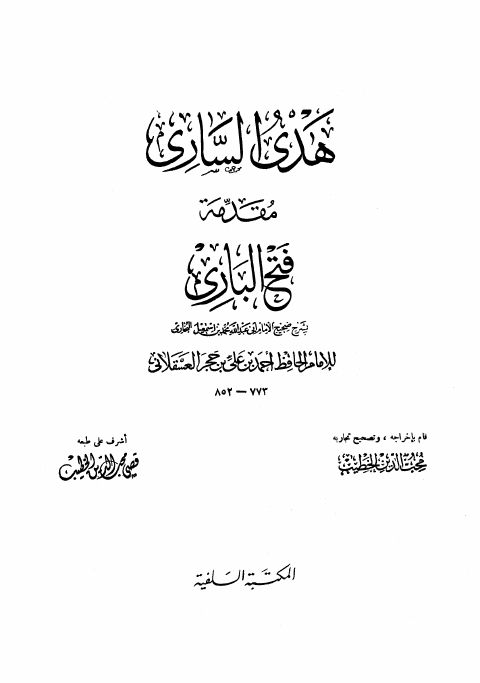

قصي محب الدين الخطيب
Author
Resources

الأربعون النووية وشرحها الأربعون النووية وشرحها يحيى بن شرف النووي
هدي الساري مقدمة فتح الباري بشرح صحيح البخاري- السلفية هدي الساري مقدمة فتح الباري بشرح صحيح البخاري- السلفية أحمد بن علي بن حجر العسقلاني فتح الباري بشرح صحيح الإمام البخاري- ط. الريان
فتح الباري بشرح صحيح الإمام البخاري- ط. الريان
أحمد بن علي بن حجر العسقلاني
فتح الباري بشرح صحيح الإمام البخاري- ط. الريان
فتح الباري بشرح صحيح الإمام البخاري- ط. الريان
أحمد بن علي بن حجر العسقلاني